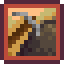
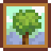
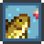

Publishing Info
- Published by: Chucklefish Ltd., ConcernedApe LLC, Oizumi Amuzio Inc.
- Developed by: ConcernedApe LLC
- Released: February 26, 2016

Description
Stardew Valley is a farming and life simulation game in which the player inherits a neglected farm
on the edge of a small rural community.
Leaving behind an unfulfilling city job, the protagonist sets
out to restore the overgrown property while becoming part of the town of Pelican Town in the Stardew Valley
region.
The game is open-ended, allowing players to decide how they balance farm development, social
interactions, exploration, and other activities.
Heavily influenced by the farming and life simulation[...]

Game Categories
- Genre: Role-playing (RPG), Simulation
- Perspective: Diagonal-down
- Visual: 2D scrolling
- Gameplay: City building / construction simulation
- Interface: Direct control

Quote
"One of the most well-crafted games I have ever played generating feelings of peacefulness, anger and all emotions between through its lush and gorgeous art style and cut-throat mining gameplay.
All of the townsfolk have their own unique personalities further adding to the expansiveness of gameplay the game has to offer. There is SO much to do in this game it's amazing."